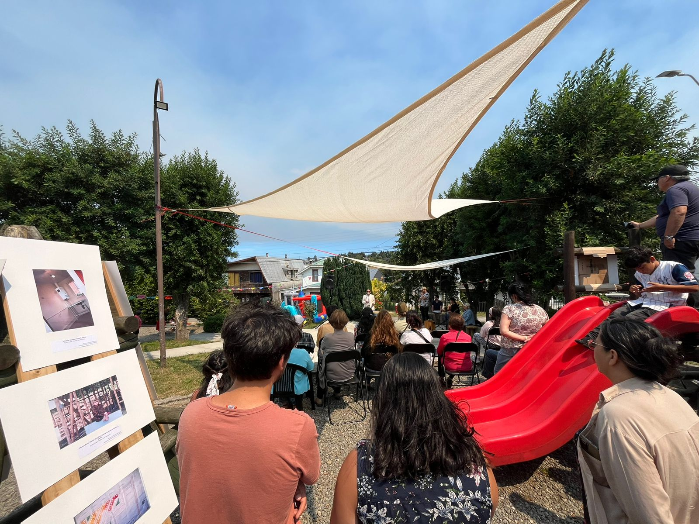
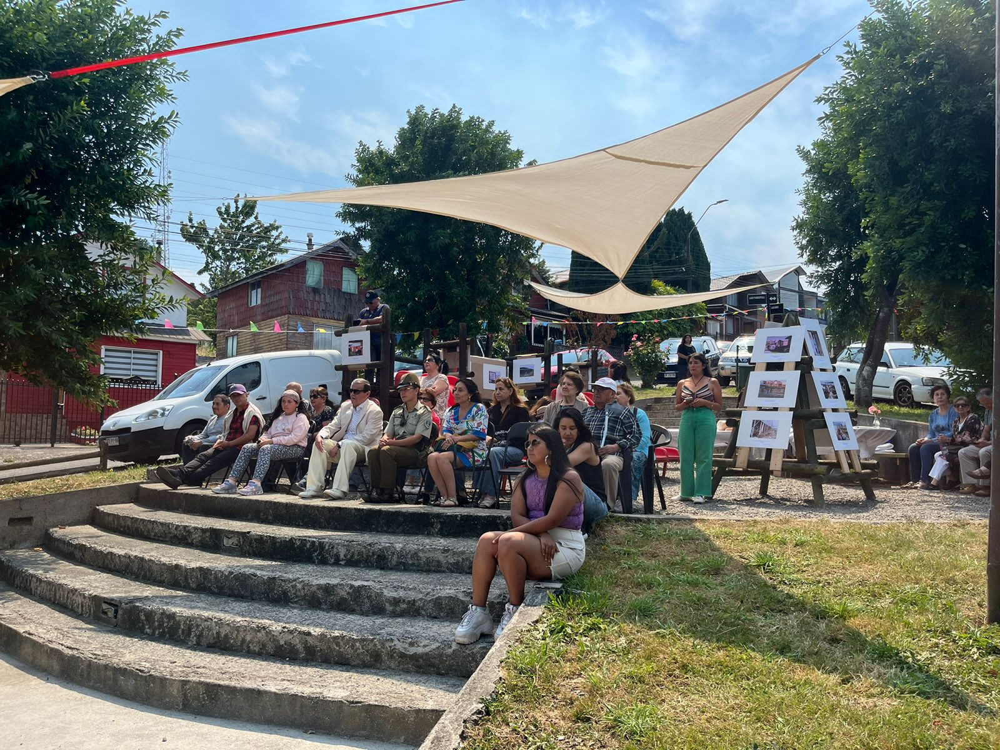

Galería



Programas artísticos, participación y transformación social a través de proyectos culturales, educativos y comunitarios desarrollados por mujeres comprometidas con el fortalecimiento de los territorios.
Conoce nuestro trabajoSomos una asociación cultural integrada por mujeres profesionales del ámbito artístico, educativo y de la gestión cultural, que impulsan proyectos de arte, formación y participación comunitaria para fortalecer los territorios y generar transformación social.
Nuestra labor conecta creatividad, territorio y comunidad, desarrollando experiencias que promueven el diálogo, la reflexión crítica, la expresión colectiva y el fortalecimiento del tejido social. Entendemos la cultura como una herramienta de encuentro, cuidado y construcción colectiva capaz de mejorar la calidad de vida de las personas.
La asociación reúne diversas trayectorias vinculadas a las artes escénicas, la literatura, las artes visuales, la música, la producción cultural y la educación artística.
Entre sus integrantes se encuentra Catalina Ramírez, escritora y autora publicada, quien aporta desde la creación literaria, la mediación cultural y los procesos de escritura como herramientas de reflexión y expresión comunitaria.
Claudia Wessel cuenta con una amplia experiencia en gestión cultural y comunicación, destacando su trabajo en la creación y conducción de programas culturales para Canal 13 Cable, además de su trayectoria como gestora cultural en la Municipalidad de Puerto Varas.
Brania Berger, artista visual y educadora, posee experiencia en pedagogía de las artes visuales, desarrollando procesos formativos con comunidades educativas.
Camila Amigo aporta desde la producción cultural y musical, con experiencia en la organización de actividades artísticas como el Festival de la Lluvia de Puerto Varas y encuentros vinculados a la música y el jazz.
Angélica Alvarado, artista visual, desarrolla procesos de creación y enseñanza artística mediante talleres dirigidos a personas adultas mayores, promoviendo creatividad, expresión personal y bienestar.
En conjunto, las socias integran distintas disciplinas y experiencias para desarrollar proyectos culturales con enfoque territorial, participación comunitaria e impacto social, promoviendo una cultura más inclusiva, cercana y transformadora.
Aspiramos a consolidarnos como una cooperativa cultural referente en Chile por la calidad de nuestras metodologías participativas, el trabajo colaborativo entre mujeres y la capacidad de desarrollar proyectos culturales sostenibles con impacto comunitario.
Intervenciones escénicas en espacios públicos que invitan a reflexionar sobre problemáticas sociales y fortalecer la participación ciudadana.
Programas artísticos y comunitarios para personas adultas mayores, organizaciones, universidades, agrupaciones y comunidades, promoviendo creatividad y encuentro.
Desarrollo metodológico que integra Teatro Invisible, educación emocional y neurociencia aplicada para promover bienestar y participación comunitaria.


Conversación sobre Teatro Invisible, participación comunitaria, neurociencia aplicada y el trabajo desarrollado con personas mayores en la comuna de San Antonio.
Actividades de mediación cultural que incluyen lanzamiento de libros, conversatorios e intervenciones escénicas. Entre ellas destaca la presentación del libro "Dedos y estado del arte", de Catalina Ramírez.
Email: amancay.wessel@gmail.com
Teléfono: +56 9 2602 2940
Ubicación: Región de Los Lagos, Chile
Asociación Cultura que Transforma